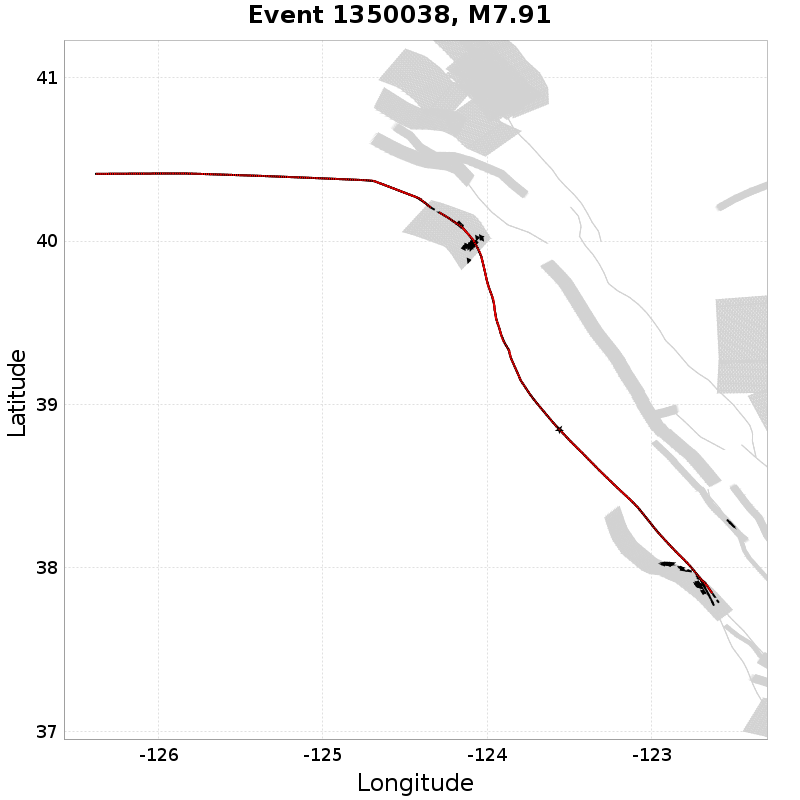
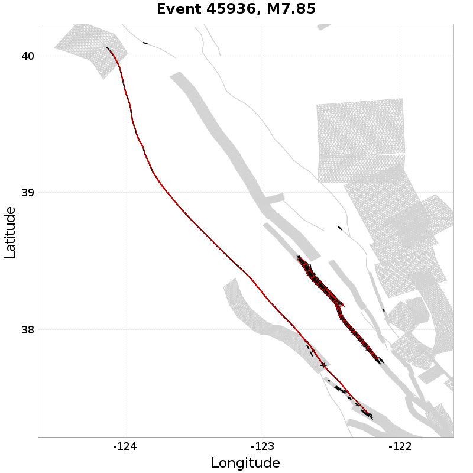
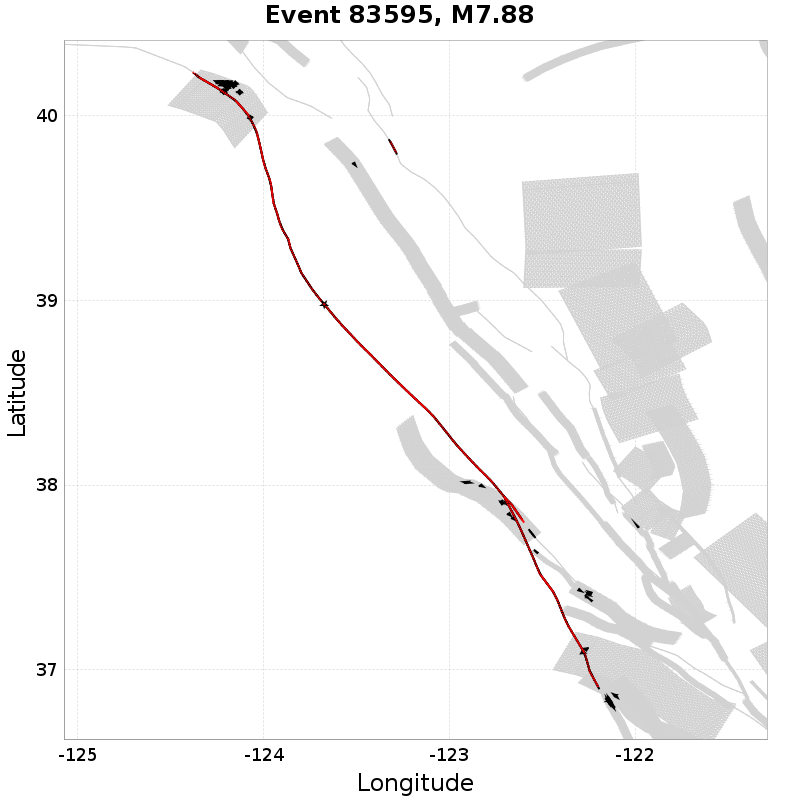
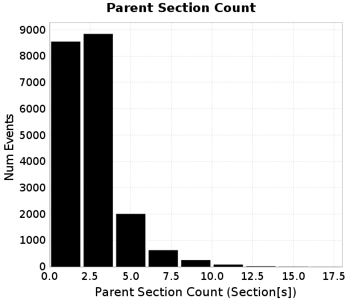
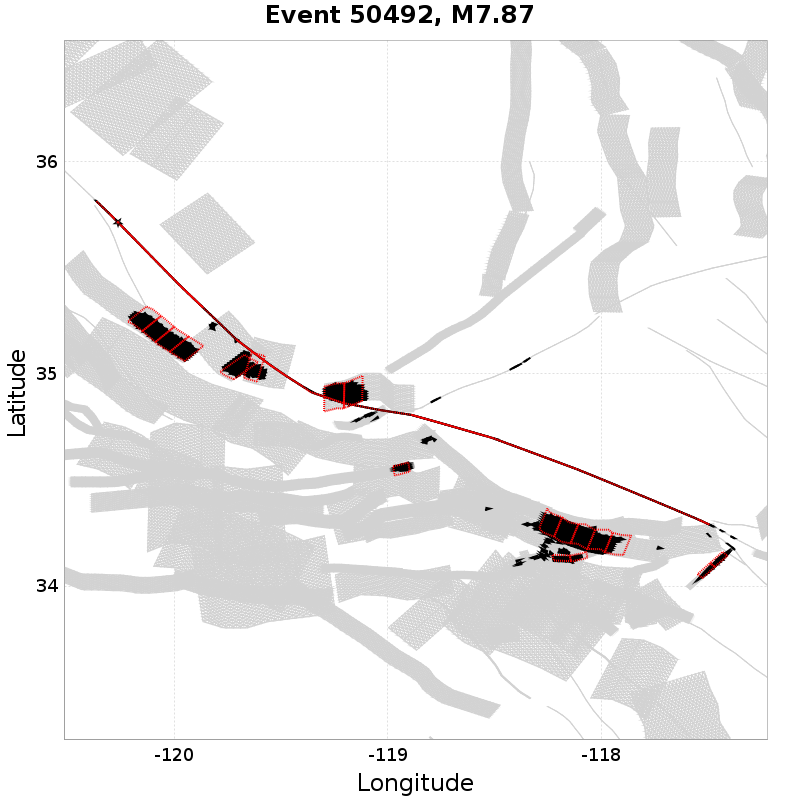
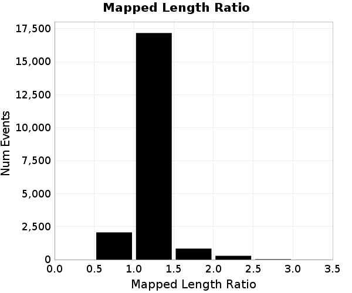
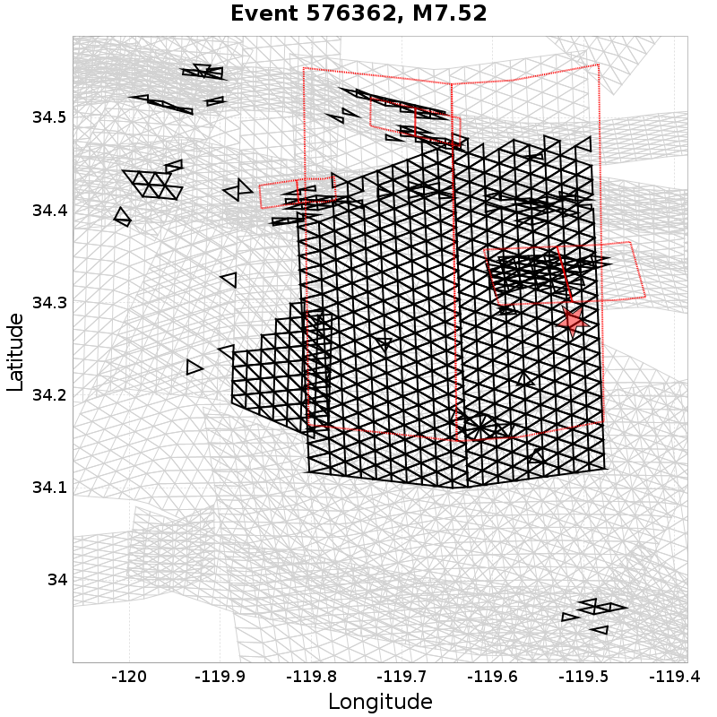
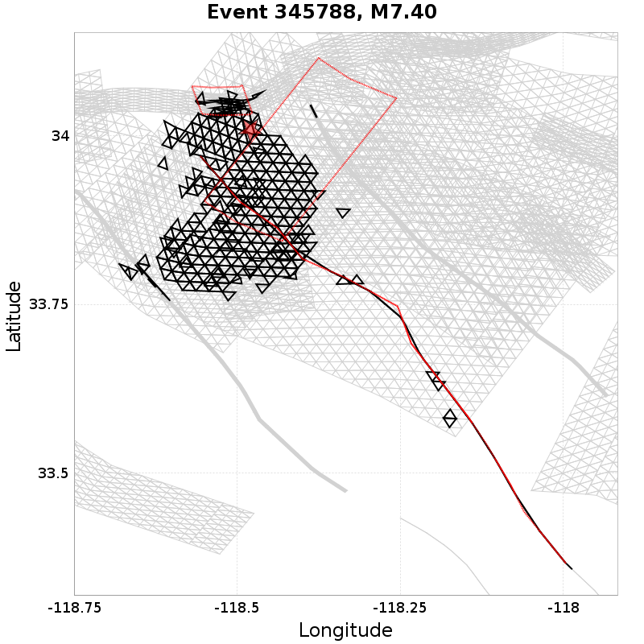

Subsections participates in a rupture if at least 20.0 % of its area ruptures
Total count of mapped UCERF3 subsections (e.g. SAF Mojave S Subsection 3), after application of minimum subsection area filter
| Event ID | Subsection Count | Plot |
|---|---|---|
| 1350038 | 92 (Subsection[s]) |  |
| 844188 | 83 (Subsection[s]) |  |
| 45936 | 82 (Subsection[s]) |  |
| 83595 | 82 (Subsection[s]) |  |
| 984679 | 82 (Subsection[s]) |  |
Total count of mapped UCERF3 subsections (e.g. SAF Mojave S), after application of minimum subsection area filter

| Event ID | Parent Section Count | Plot |
|---|---|---|
| 40968 | 17 (Section[s]) |  |
| 1202919 | 16 (Section[s]) |  |
| 50492 | 15 (Section[s]) |  |
| 499423 | 15 (Section[s]) |  |
| 575055 | 14 (Section[s]) |  |
Ratio of the total rupture length (UCERF3 mapped subsection rupture) to the idealized length, defined as the straight line distance between the furthest 2 subsections

| Event ID | Mapped Length Ratio | Plot |
|---|---|---|
| 788299 | 3.27 |  |
| 1277639 | 3.07 |  |
| 1296264 | 3.05 |  |
| 254462 | 3.04 |  |
| 549007 | 3.03 |  |
Total rupture length (UCERF3 mapped subsection rupture) minus the idealized length, defined as the straight line distance between the furthest 2 subsections

| Event ID | Mapped Excess Length | Plot |
|---|---|---|
| 1202919 | 237.63 (km) | |
| 457537 | 178.25 (km) |  |
| 935211 | 177.56 (km) |  |
| 1452878 | 174.91 (km) | |
| 1497190 | 167.36 (km) |  |
Moment of simulator elements not included in mapped UCERF3 subsection rupture

| Event ID | Moment Off Mapped Rupture | Plot |
|---|---|---|
| 576362 | 1.7496393E19 (N-m) |  |
| 957840 | 1.7276246E19 (N-m) |  |
| 345788 | 1.66809E19 (N-m) |  |
| 81590 | 1.6041317E19 (N-m) |  |
| 840646 | 1.5931184E19 (N-m) |  |
Event Moment Magnitude

| Event ID | Magnitude | Plot |
|---|---|---|
| 232197 | 7.96 |  |
| 1371777 | 7.95 |  |
| 1497190 | 7.95 | |
| 458932 | 7.94 |  |
| 1202919 | 7.94 | |